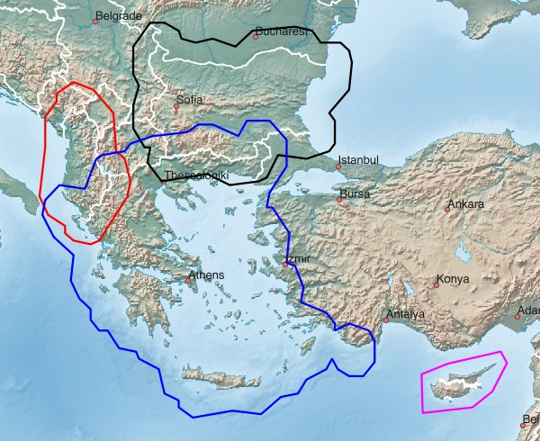
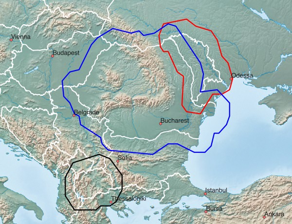

Südosteuropa - verfügbare Karten:
| Griechenland | Albanien | Bulgarien |
| Zypern | Rumänien | Mazedonien |
| Moldawien | Serbien | Bosnien-Herzegowina |
| Kosovo (siehe Serbien) | Montenegro |
Hinweise zum Download:
- Klick auf das Netbook Icon im PC-Browser: die Karte wird auf den Personal-Computer geladen
- Klick auf das Locus Map Icon im Android-Browser: Karte+Design werden nach Locus Map geladen
- Klick auf das OruxMaps Icon im Android-Browser: die Karte wird nach OruxMaps geladen
Griechenland, Albanien, Bulgarien, Zypern:

| Griechenland GRC+ 255 MB |
| Albanien ALB+ 89 MB |
| Bulgarien BGR+ 167 MB |
| Zypern CYP 10 MB |
Rumänien, Mazedonien, Moldawien:

| Rumänien ROU+ 323 MB |
| Mazedonien MKD+ 86 MB |
| Moldawien MDA+ 61 MB |
Serbien, Bosnien-Herzegowina, Montenegro:

| Serbien SRB+ 187 MB |
| Bosnien-Herzegowina BIH+ 152 MB |
| Montenegro MNE+ 69 MB |